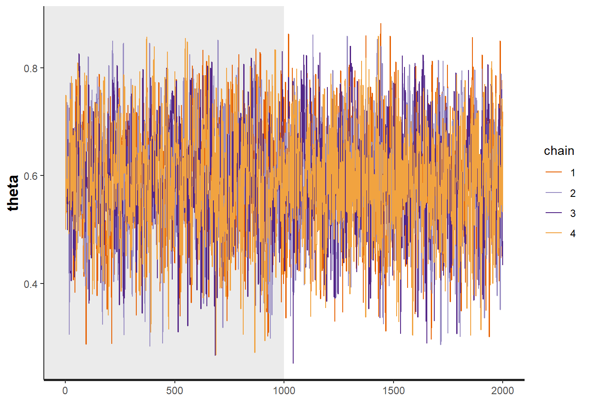
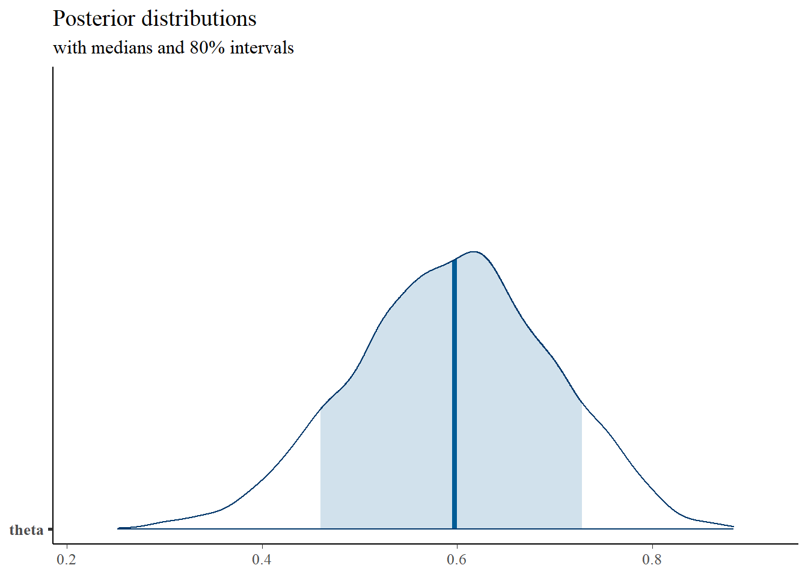
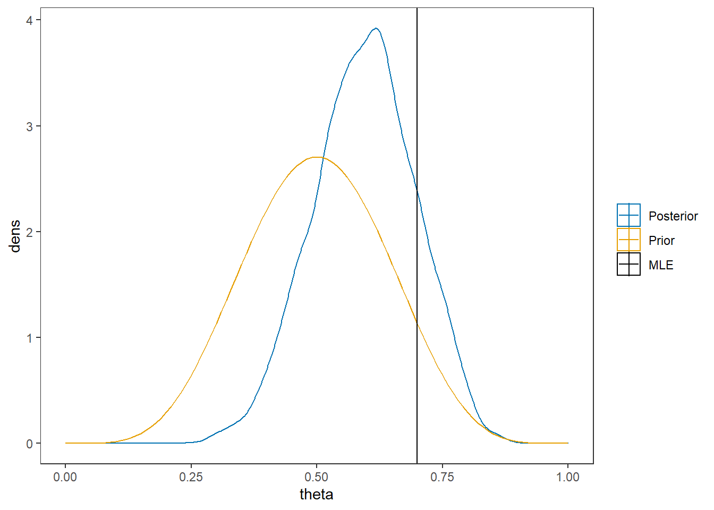
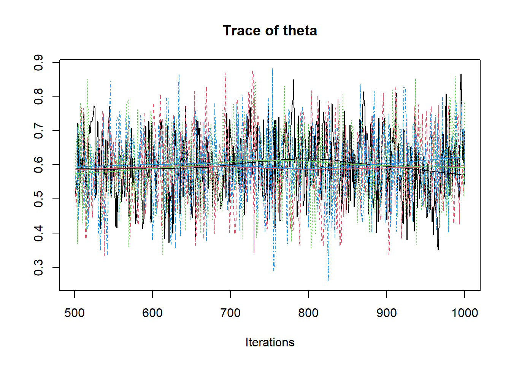
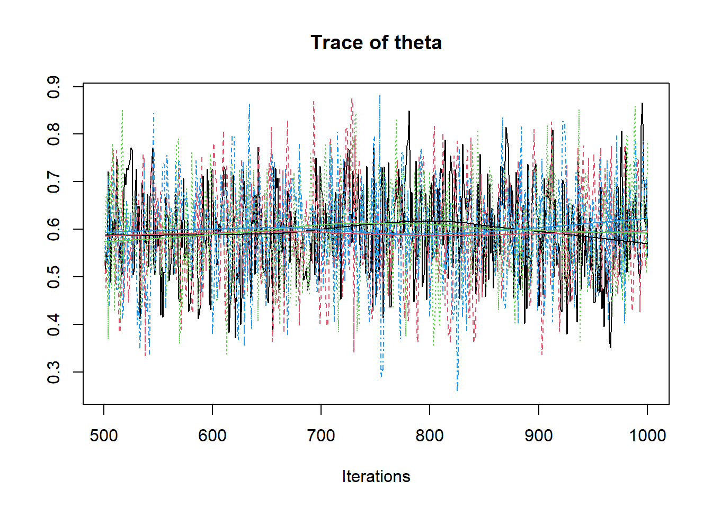
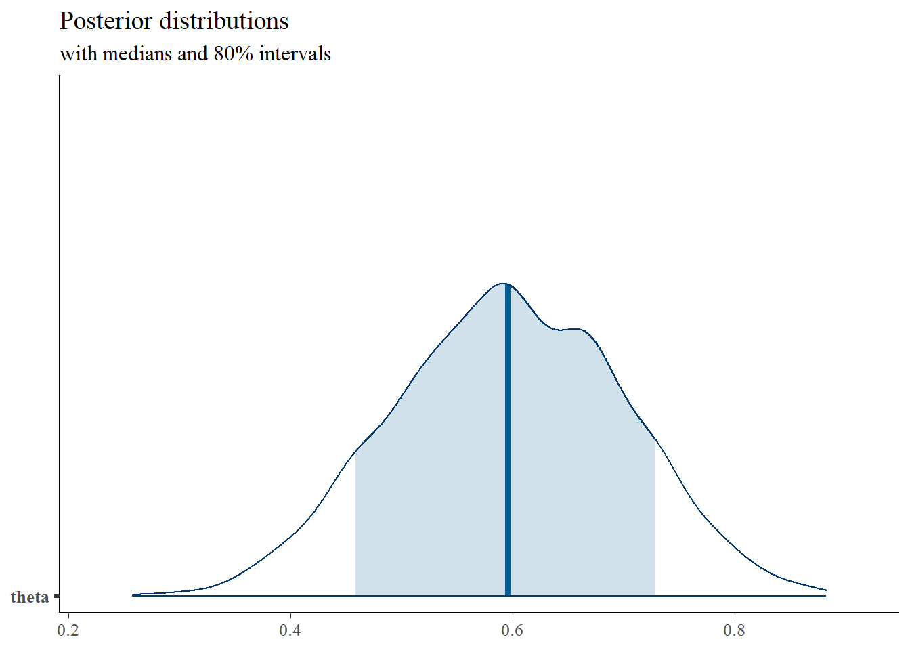
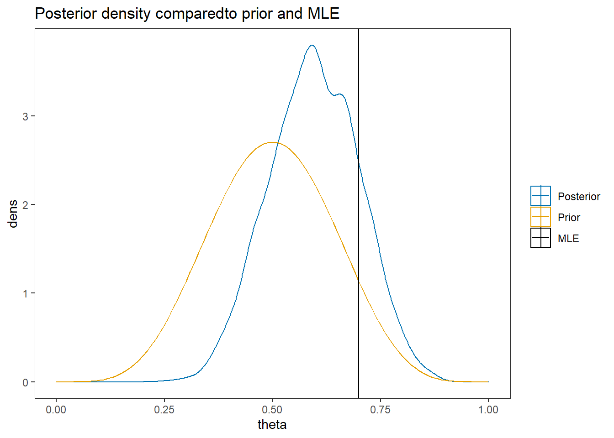

2.1 Beta-binomial Example
Here I go through the the first example from BPM. The example is a relatively simple beta-binomial model. Which is a way of modeling the number of occurrences of a bernoulli process. For example, suppose we were interested in the number of times a coin landed on heads. Here, we have a set number of coin flips (say \(J\)) and we are interested in the number of times the coin landed on heads (call this outcome \(y\)). We can model this structure letting \(y\) be a binomial random variable which we can express this as \[y\sim\mathrm{Binomial}(\theta, J)\] where \(\theta\) is the probability of heads on any given coin toss. As part of the Bayesian modeling I need to specify my prior belief as to the likely values of \(\theta\). The probability \(\theta\) lies in the interval \([0, 1]\). A nice probability distribution on this range is the beta distribution. That is, I can model my belief as to the likely values of the probability of heads by saying that \(\theta\) is beta distributed which can be expressed as \[\theta \sim \mathrm{Beta}(\alpha,\beta)\]. The two parameters for the beta distribution are representative of the shape the distribution will take. When \(\alpha = \beta\) the distribution is symmetrical, and when \(\alpha = \beta=1\) the beta distribution is flat or uniform over \([0,1]\). When a distribution is uniform I mean that all values are equally likely over the range of possible values which can be described as having the belief that all values are equally plausible.
This model can be represented in a couple different ways. One way is as a directed acyclic graph (DAG). A DAG representation is very similar to path models in general structural equation modeling. The directed nature of the diagram highlights how observed variables (e.g., \(y\)) are modeled by unknown parameters \(\theta\). All observed or explicitly defined variables/values are in rectangles while any latent variable or model parameter are in circles. DAG representation of model for the beta-binomal model is
Figure 2.1: Directed Acyclic Graph (DAG) for the beta-binomial model
I have given an alternative DAG representation that includes all relevant details. In terms of a DAG, I prefer this representation as all the assumed model components are made explicit. However, in more complex models this approach will likely lead to very dense and possible unuseful representations.
Figure 2.2: DAG with explicit representation for all beta-binomial model components
Yet another alternative representation is what I call a model specification chart. This takes on a similar feel as a DAG in that the flow of model parameters can be shown, but with the major difference that I use the distributional notation explicitly.

Figure 2.3: Model specification diagram for beta-binomial model
I will stick with these last two representations as much as possible.
2.1.1 Computation using Stan
Now, I’m finally getting to the analysis part.
I have done my best to be descriptive of what the Stan code represents and how it works (in a general how to use this sense).
I highly recommend a look at the example analysis by the development team to help see their approach as well (see here Stan analysis).
model_beta_binomial <- '
// data block needs to describe the variable
// type (e.g., real, int, etc.) and the name
// in the data object passed
data {
int J;
int y;
real alpha;
real beta;
}
// parameters block needs to specify the
// unknown parameters
parameters {
real<lower=0, upper=1>theta;
}
// model block needs to describe the data-model
// and the prior specification
model {
y ~ binomial(J, theta);
theta ~ beta(alpha, beta);
}
// there must be a blank line after all blocks
'
# data must be in a list
mydata <- list(
J = 10,
y = 7,
alpha = 6,
beta = 6
)
# start values can be done automatically by stan or
# done explicitly be the analyst (me). I prefer
# to try to be explicit so that I can *try* to
# guarantee that the initial chains start.
# The values can be specified as a function
# which lists the values to the respective
# parameters
start_values <- function(){
list(theta = 0.5)
}
# Next, need to fit the model
# I have explicited outlined some common parameters
fit <- stan(
model_code = model_beta_binomial, # model code to be compiled
data = mydata, # my data
init = start_values, # starting values
chains = 4, # number of Markov chains
warmup = 1000, # number of warmup iterations per chain
iter = 2000, # total number of iterations per chain
cores = 2, # number of cores (could use one per chain)
refresh = 0 # no progress shown
)## Warning in system(paste(CXX, ARGS), ignore.stdout = TRUE, ignore.stderr = TRUE):
## '-E' not found## Inference for Stan model: db495166b911389af4867f0120ac5e81.
## 4 chains, each with iter=2000; warmup=1000; thin=1;
## post-warmup draws per chain=1000, total post-warmup draws=4000.
##
## mean se_mean sd 2.5% 25% 50% 75% 97.5% n_eff Rhat
## theta 0.59 0 0.1 0.38 0.53 0.6 0.67 0.79 1420 1
##
## Samples were drawn using NUTS(diag_e) at Fri Sep 11 11:11:59 2020.
## For each parameter, n_eff is a crude measure of effective sample size,
## and Rhat is the potential scale reduction factor on split chains (at
## convergence, Rhat=1).# plot the posterior in a
# 95% probability interval
# and 80% to contrast the dispersion
plot(fit, pars="theta")

# plot the posterior density
posterior <- as.matrix(fit)
plot_title <- ggtitle("Posterior distributions",
"with medians and 80% intervals")
mcmc_areas(
posterior,
pars = c("theta"),
prob = 0.8) +
plot_title
# I prefer a posterior plot that includes prior and MLE
MLE <- 0.7
prior <- function(x){dbeta(x, 6, 6)}
x <- seq(0, 1, 0.01)
prior.dat <- data.frame(X=x, dens = prior(x))
cols <- c("Posterior"="#0072B2", "Prior"="#E69F00", "MLE"= "black")#"#56B4E9", "#E69F00" "#CC79A7"
ggplot()+
geom_density(data=as.data.frame(posterior),
aes(x=theta, color="Posterior"))+
geom_line(data=prior.dat,
aes(x=x, y=dens, color="Prior"))+
geom_vline(aes(xintercept=MLE, color="MLE"))+
scale_color_manual(values=cols, name=NULL)+
theme_bw()+
theme(panel.grid = element_blank())
2.1.2 Computation using WinBUGS (OpenBUGS)
Here, I am simply contrasting the computation from Stan to how BPM describes the computations using WinBUGS. I have downloaded the .bug file from the text website and I will load it into R for viewing.
First, let’s take a look at the model described by BPM on p. 39.
# A model block
model{
#################################
# Prior distribution
#################################
theta ~ dbeta(alpha,beta)
#################################
# Conditional distribution of the data
#################################
y ~ dbin(theta, J)
}
# data statement
list(J = 10, y = 7, alpha = 6, beta = 6)Next, we want to use the above model.
Using OpensBUGS through R can be a little clunky as I had to create objects with the filepaths of the data and model code then get R to read those in through the function openbugs.
Otherwise, the code is similar to style to the code used for calling Stan.
# model code
model.file <- paste0(w.d,"/code/Binomial/Binomial Model.bug")
# get data file
data.file <- paste0(w.d,"/code/Binomial/Binomial data.txt")
# starting values
start_values <- function(){
list(theta=0.5)
}
# vector of all parameters to save
param_save <- c("theta")
# fit model
fit <- openbugs(
data= data.file,
model.file = model.file, # R grabs the file and runs it in openBUGS
parameters.to.save = param_save,
inits=start_values,
n.chains = 4,
n.iter = 2000,
n.burnin = 1000,
n.thin = 1
)## Sampling has been started ...## Inference for Bugs model at "C:/Users/noahp/Box/Research/Morgan-Padgett/Bayesian-Psychometric-Modeling/code/Binomial/Binomial Model.bug", fit using OpenBUGS,
## 4 chains, each with 2000 iterations (first 1000 discarded)
## n.sims = 4000 iterations saved
## mean sd 2.5% 25% 50% 75% 97.5% Rhat n.eff
## theta 0.6 0.1 0.4 0.5 0.6 0.7 0.8 1 1500
## deviance 3.6 1.1 2.6 2.8 3.2 4.0 6.7 1 1600
##
## For each parameter, n.eff is a crude measure of effective sample size,
## and Rhat is the potential scale reduction factor (at convergence, Rhat=1).
##
## DIC info (using the rule, pD = Dbar-Dhat)
## pD = 0.4 and DIC = 4.0
## DIC is an estimate of expected predictive error (lower deviance is better).posterior <- fit$sims.matrix
plot_title <- ggtitle("Posterior distributions",
"with medians and 80% intervals")
mcmc_areas(
posterior,
pars = c("theta"),
prob = 0.8) +
plot_title
MLE <- 0.7
prior <- function(x){dbeta(x, 6, 6)}
x <- seq(0, 1, 0.01)
prior.dat <- data.frame(X=x, dens = prior(x))
cols <- c("Posterior"="#0072B2", "Prior"="#E69F00", "MLE"= "black")#"#56B4E9", "#E69F00" "#CC79A7"
ggplot()+
geom_density(data=as.data.frame(posterior),
aes(x=theta, color="Posterior"))+
geom_line(data=prior.dat,
aes(x=x, y=dens, color="Prior"))+
geom_vline(aes(xintercept=MLE, color="MLE"))+
labs(title="Posterior density comparedto prior and MLE")+
scale_color_manual(values=cols, name=NULL)+
theme_bw()+
theme(panel.grid = element_blank())
2.1.3 Computation using JAGS (R2jags)
Here, I utilize JAGS, which is nearly identical to WinBUGS in how the underlying mechanics work to compute the posterior but is easily to use through R.
# model code
jags.model <- function(){
#################################
# Conditional distribution of the data
#################################
y ~ dbin(theta, J)
#################################
# Prior distribution
#################################
theta ~ dbeta(alpha, beta)
}
# data
mydata <- list(
J = 10,
y = 7,
alpha = 6,
beta = 6
)
# starting values
start_values <- function(){
list("theta"=0.5)
}
# vector of all parameters to save
param_save <- c("theta")
# fit model
fit <- jags(
model.file=jags.model,
data=mydata,
inits=start_values,
parameters.to.save = param_save,
n.iter=1000,
n.burnin = 500,
n.chains = 4,
n.thin=1,
progress.bar = "none")## Compiling model graph
## Resolving undeclared variables
## Allocating nodes
## Graph information:
## Observed stochastic nodes: 1
## Unobserved stochastic nodes: 1
## Total graph size: 5
##
## Initializing model## Inference for Bugs model at "C:/Users/noahp/AppData/Local/Temp/RtmpkVCUHW/model7fc662b72.txt", fit using jags,
## 4 chains, each with 1000 iterations (first 500 discarded)
## n.sims = 2000 iterations saved
## mu.vect sd.vect 2.5% 25% 50% 75% 97.5% Rhat n.eff
## theta 0.592 0.100 0.393 0.526 0.594 0.662 0.782 1.003 870
## deviance 3.547 1.096 2.643 2.766 3.157 3.919 6.495 1.002 1400
##
## For each parameter, n.eff is a crude measure of effective sample size,
## and Rhat is the potential scale reduction factor (at convergence, Rhat=1).
##
## DIC info (using the rule, pD = var(deviance)/2)
## pD = 0.6 and DIC = 4.1
## DIC is an estimate of expected predictive error (lower deviance is better). 

# convert to singel data.frame for density plot
a <- colnames(as.data.frame(jags.mcmc[[1]]))
plot.data <- data.frame(as.matrix(jags.mcmc, chains=T, iters = T))
colnames(plot.data) <- c("chain", "iter", a)
plot_title <- ggtitle("Posterior distributions",
"with medians and 80% intervals")
mcmc_areas(
plot.data,
pars = c("theta"),
prob = 0.8) +
plot_title
MLE <- 0.7
prior <- function(x){dbeta(x, 6, 6)}
x <- seq(0, 1, 0.01)
prior.dat <- data.frame(X=x, dens = prior(x))
cols <- c("Posterior"="#0072B2", "Prior"="#E69F00", "MLE"= "black")#"#56B4E9", "#E69F00" "#CC79A7"
ggplot()+
geom_density(data=plot.data,
aes(x=theta, color="Posterior"))+
geom_line(data=prior.dat,
aes(x=x, y=dens, color="Prior"))+
geom_vline(aes(xintercept=MLE, color="MLE"))+
labs(title="Posterior density comparedto prior and MLE")+
scale_color_manual(values=cols, name=NULL)+
theme_bw()+
theme(panel.grid = element_blank())